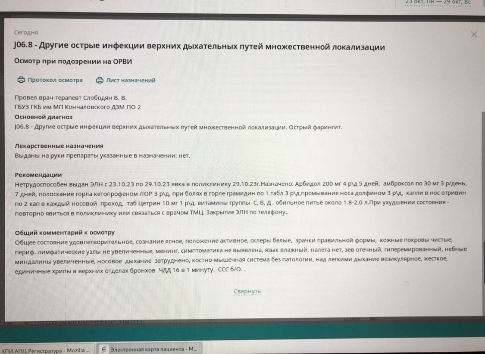

Фильтр-бокс — структурное подразделение, обеспечивающее отдельный прием пациентов, готовность к оперативному оказанию медицинской помощи, забор биологического материала на исследования и госпитализацию больных с признаками внебольничной пневмонии.
В целом структуру фильтр-бокса можно разделить на 3 части: холл, кабинет забора биоматериала и кабинет врача.
С чего всё начинается?
Пациент, зайдя в отделение, расположенное отдельно от основного входа поликлиники, вешает свою верхнюю одежду, надевает бахилы и медицинскую маску.
После чего он садится за стол, заполняет ИДС и шапку чек-листа.
ИДС заполняется стандартно, так же как и во всех медицинских организациях.
В шапке чек-листа пациентом указывается ФИО, номер полиса ОМС, номер телефона, СНИЛС. Остальные данные предназначены для заполнения медсестрой.
С заполненным ИДС и чек-листом пациент проходит в кабинет забора биоматериала, где ему берутся мазки из носовой полости и зева.
Проводится экспресс-тестирование на Ковид и грипп (беременным и лицам 65+).
Также осуществляется ПЦР-диагностика Ковида и (в некоторых поликлиниках) других респираторных инфекций (РНК Influenza virus А H1N1, РНК Influenza virus А H3N2, РНК Influenza virus А H5N1, РНК Influenza virus В, РНК Parainfluenza virus, ДНК Adenovirus, РНК Respiratory Syncytial virus, РНК Metapneumovirus, РНК Rhinovirus, ДНК Bocavirus).
После взятия биоматерила результаты мазков регистрируются в реестре проб, пациенту сообщается о результатах экпресс-тестов (результаты ПЦР-диагностики приходят на следующий день).
Далее медсестра измеряет температуру тела, сатурацию, АД и заполняет чек-лист.
После чего пациент проходит в кабинет врача.
Врач ознакамливается с чек-листом, заполняет базовые сведения о пациенте в его ЭМК.
Затем осуществляет более подробный сбор жалоб и анамнеза болезни, проводит осмотр (зева, носа, ушей, глаз при необходимости), аускультацию легких, пальпацию живота (при соответствующих жалобах пациента).
После чего доктор выставляет предварительный диагноз, назначает лечение и отвечает на вопросы пациента.
При сомнительных диагнозах в качестве дифференциальной диагностики врач может назначить дополнительные исследования (анализы крови, мочи, рентген, узи).
Если пациенту не становится лучше или появляются осложнения, то он повторно обращается в фильтр-бокс с результатами исследований, где ему проводят коррекцию составленного лечения.
